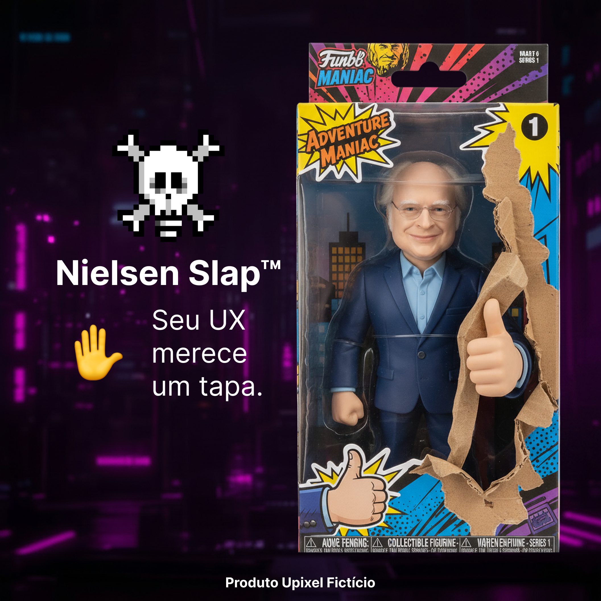

Nielsen Slap™
O boneco que corrige seu UX antes que o usuário faça isso.
Pare de errar em silêncio.
✋ Receba um tapa educativo ao ignorar heurísticas.
🚨 Descubra interfaces confusas antes do desastre.
😡 Escute reclamações antes que elas cheguem no suporte.
🧠 Aprenda UX do jeito mais inesquecível possível.
*O tapa é simbólico, mas a vergonha é real. Produto desenvolvido para designers que ainda acham que "ficou bonito" é uma métrica de sucesso.

Benefícios
Corrija seus erros de UX antes que o usuário descubra e faça uma reclamação.
Tapa Preventivo™
Receba uma correção antes de publicar uma interface duvidosa.
Detector de Heurísticas™
Encontra erros que você jurava que ninguém perceberia.
Alerta Anti-Dark Pattern™
Impede que sua interface vire uma armadilha para usuários.
Detector de Botão Invisível™
Identifica aquele botão que só o designer consegue encontrar.
Modo Nielsen Ativado™
Troca opiniões como "eu gostei" por análise heurística.
Correção Emergencial™
Ativado quando alguém fala: "não precisa testar com usuário".
Checklist Doloroso™
Revise seus erros antes que o usuário revise sua avaliação.
10 Heurísticas™
Dez motivos diferentes para receber um tapa educativo.
*Resultados não avaliados por nenhum órgão real de usabilidade, design ou bom senso. Nielsen Slap™ é um produto fictício e não substitui testes com usuários — infelizmente.
Como funciona
Quatro passos entre uma interface ruim e uma correção dolorosa.
Mostre sua interface
O Nielsen Slap™ analisa seu design com desaprovação automática.
Ignore o aviso
Diga "mas o usuário entende". O sistema entra em modo educativo.
Receba o tapa
Uma heurística é escolhida para corrigir sua decisão.
Refaça o design
Ou continue ignorando até o usuário reclamar.
O que vem na embalagem
Tudo que você precisa para nunca mais tomar decisões sozinho.
- 1 Nielsen Slap™ edição limitada.
- 1 Mão corretora de decisões ruins.
- 1 Manual das 10 heurísticas.
- 1 Detector de "achismos" de design.
- 1 Cartão "Faça teste com usuário".
- 1 Apito para reuniões sem sentido.
- 1 Certificado oficial de designer corrigido.
Antes de receber um tapa heurístico, tire essas dúvidas
O Nielsen Slap™ realmente dá tapas?
Sim. Principalmente quando detecta alguém dizendo: "não precisa testar com usuário, eu acho que está bom".
Ele conhece as 10 heurísticas de Nielsen?
Conhece todas. Inclusive aquela que você esqueceu enquanto colocava mais três botões na tela inicial.
O boneco consegue identificar uma interface ruim?
Sim. Ele detecta menus escondidos, mensagens confusas e aquele botão que só funciona porque você sabe onde está.
Ele funciona com inteligência artificial?
Funciona. Inclusive corrige a IA quando ela cria uma interface bonita, moderna e completamente impossível de usar.
Posso usar durante reuniões com clientes?
Pode. O modo reunião é ativado automaticamente quando alguém fala: "meu sobrinho entende de design e acha que ficou melhor assim".
Isso é um produto de verdade?
Não. O Nielsen Slap™ é um produto 100% fictício da coleção satírica Upubli™ da Upixel. Ele existe apenas para lembrar que uma boa interface começa com usuários — e termina sem tapas.
Este é um produto fictício, criado apenas para entretenimento pela Upixel. UX em Spray™, a Upubli™ e todos os depoimentos desta página não existem, não são vendidos e não substituem pesquisa, workshop ou entrevista nenhuma — essas, sim, continuam bem reais e recomendadas.